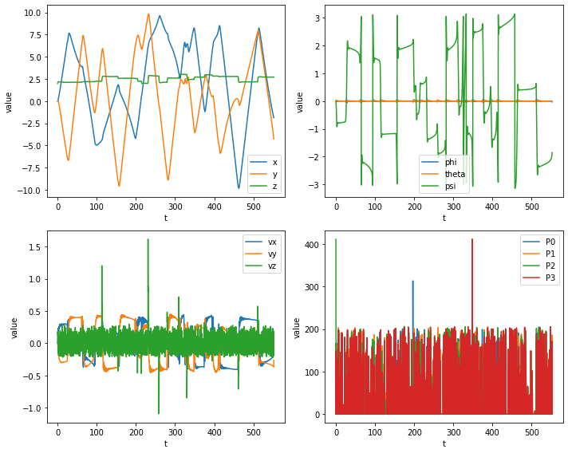
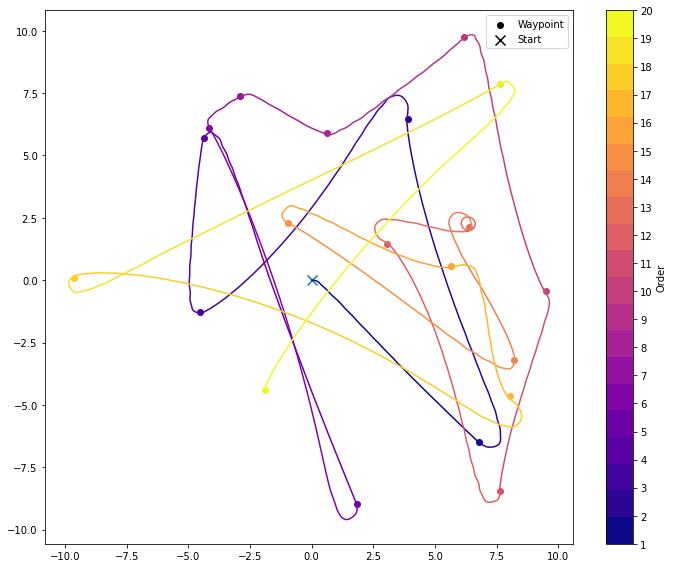

Simple Position
[1]:
import sys
[2]:
for _ in range(2):
try:
import jdrones
except ModuleNotFoundError:
print("jdrones not found, installing")
!{sys.executable} -m pip install -q git+ssh://git@github.com/iwishiwasaneagle/jdrones/
[3]:
import gymnasium
import jdrones
import jdrones.types
import pandas as pd
import numpy as np
from tqdm.auto import tqdm
pybullet build time: Feb 2 2023 13:13:41
[4]:
%matplotlib inline
import seaborn as sns
import matplotlib.pyplot as plt
import matplotlib as mpl
/home/jhewers/.local/lib/python3.10/site-packages/scipy/__init__.py:146: UserWarning: A NumPy version >=1.16.5 and <1.23.0 is required for this version of SciPy (detected version 1.23.5
warnings.warn(f"A NumPy version >={np_minversion} and <{np_maxversion}"
[5]:
from collections import deque
[6]:
dt = 1/240
seed = 1337
initial_state = jdrones.types.State()
initial_state.pos = (0,0,2)
[7]:
env = gymnasium.make("PIDTrajectoryDroneEnv-v0",dt=dt,initial_state=initial_state)
env = gymnasium.wrappers.TimeLimit(env, max_episode_steps=20)
b3Warning[examples/Importers/ImportURDFDemo/BulletUrdfImporter.cpp,126]:
No inertial data for link, using mass=1, localinertiadiagonal = 1,1,1, identity local inertial frameb3Warning[examples/Importers/ImportURDFDemo/BulletUrdfImporter.cpp,126]:
base_link
/home/jhewers/.local/lib/python3.10/site-packages/gymnasium/spaces/box.py:129: UserWarning: WARN: Box bound precision lowered by casting to float64
gym.logger.warn(f"Box bound precision lowered by casting to {self.dtype}")
[8]:
observations = deque()
setpoints = deque()
obs, info = env.reset(seed=seed)
trunc, term = False, False
while not (trunc or term):
setpoint = env.action_space.sample()
setpoints.append(setpoint)
obs, _, term, trunc, info = env.step(setpoint)
observations.append(obs)
2023-02-03 12:49:31.085 | DEBUG | jdrones.envs.trajectory:step:97 - Completed 5963 steps in 1.19s (5002.32 it/s)
/home/jhewers/.local/lib/python3.10/site-packages/gymnasium/utils/passive_env_checker.py:181: UserWarning: WARN: The obs returned by the `step()` method is not within the observation space.
logger.warn(f"{pre} is not within the observation space.")
2023-02-03 12:49:32.686 | DEBUG | jdrones.envs.trajectory:step:97 - Completed 8709 steps in 1.60s (5454.69 it/s)
2023-02-03 12:49:34.085 | DEBUG | jdrones.envs.trajectory:step:97 - Completed 7939 steps in 1.39s (5720.02 it/s)
2023-02-03 12:49:34.863 | DEBUG | jdrones.envs.trajectory:step:97 - Completed 4477 steps in 0.77s (5796.47 it/s)
2023-02-03 12:49:36.577 | DEBUG | jdrones.envs.trajectory:step:97 - Completed 9784 steps in 1.71s (5721.87 it/s)
2023-02-03 12:49:38.415 | DEBUG | jdrones.envs.trajectory:step:97 - Completed 10529 steps in 1.83s (5751.17 it/s)
2023-02-03 12:49:38.673 | DEBUG | jdrones.envs.trajectory:step:97 - Completed 1449 steps in 0.25s (5773.14 it/s)
2023-02-03 12:49:39.121 | DEBUG | jdrones.envs.trajectory:step:97 - Completed 2467 steps in 0.44s (5548.71 it/s)
2023-02-03 12:49:39.882 | DEBUG | jdrones.envs.trajectory:step:97 - Completed 4060 steps in 0.76s (5353.50 it/s)
2023-02-03 12:49:41.131 | DEBUG | jdrones.envs.trajectory:step:97 - Completed 6629 steps in 1.24s (5332.02 it/s)
2023-02-03 12:49:42.105 | DEBUG | jdrones.envs.trajectory:step:97 - Completed 5046 steps in 0.97s (5201.35 it/s)
2023-02-03 12:49:43.441 | DEBUG | jdrones.envs.trajectory:step:97 - Completed 7221 steps in 1.33s (5428.10 it/s)
2023-02-03 12:49:44.318 | DEBUG | jdrones.envs.trajectory:step:97 - Completed 4872 steps in 0.87s (5588.15 it/s)
2023-02-03 12:49:45.136 | DEBUG | jdrones.envs.trajectory:step:97 - Completed 4391 steps in 0.81s (5407.98 it/s)
2023-02-03 12:49:46.263 | DEBUG | jdrones.envs.trajectory:step:97 - Completed 6313 steps in 1.12s (5618.63 it/s)
2023-02-03 12:49:47.103 | DEBUG | jdrones.envs.trajectory:step:97 - Completed 4776 steps in 0.84s (5717.49 it/s)
2023-02-03 12:49:47.797 | DEBUG | jdrones.envs.trajectory:step:97 - Completed 3862 steps in 0.69s (5600.89 it/s)
2023-02-03 12:49:49.940 | DEBUG | jdrones.envs.trajectory:step:97 - Completed 12124 steps in 2.14s (5669.28 it/s)
2023-02-03 12:49:52.079 | DEBUG | jdrones.envs.trajectory:step:97 - Completed 11938 steps in 2.13s (5603.69 it/s)
2023-02-03 12:49:53.937 | DEBUG | jdrones.envs.trajectory:step:97 - Completed 9978 steps in 1.85s (5398.02 it/s)
[9]:
dfs = []
t_prev = 0
for i,obs in enumerate(observations):
t = t_prev+np.linspace(0,len(obs)*dt,len(obs))
df = pd.DataFrame(obs,columns=["x","y","z","qx","qy","qz","qw","phi","theta","psi","vx","vy","vz","p","q","r","P0","P1","P2","P3"],index=t)
df.index.name = 't'
df['segment'] = i
dfs.append(df)
t_prev = t[-1]+dt
df = pd.concat(dfs)
df = df.iloc[::50, :] # Select only every 5th row for performance
df
[9]:
| x | y | z | qx | qy | qz | qw | phi | theta | psi | ... | vy | vz | p | q | r | P0 | P1 | P2 | P3 | segment | |
|---|---|---|---|---|---|---|---|---|---|---|---|---|---|---|---|---|---|---|---|---|---|
| t | |||||||||||||||||||||
| 0.000000 | 0.000000 | 0.000000e+00 | 2.000000 | 0.000000e+00 | 0.000000 | 0.000000 | 1.000000 | 0.000000 | -0.000000 | 0.000000 | ... | 0.000000 | 0.000000 | 0.000000 | 0.000000 | 0.000000 | 0.000000 | 0.000000 | 412.020000 | 0.000000 | 0 |
| 0.208368 | 0.000124 | -1.159156e-07 | 2.057585 | -3.750797e-07 | 0.002218 | -0.003560 | 0.999991 | -0.000017 | 0.004436 | -0.007120 | ... | -0.000004 | 0.158626 | -0.000054 | 0.043492 | -0.088159 | 137.546285 | 148.615442 | 188.434758 | 148.428568 | 0 |
| 0.416737 | 0.002286 | -1.437475e-05 | 2.098728 | 4.039422e-06 | 0.007841 | -0.018196 | 0.999804 | -0.000277 | 0.015679 | -0.036397 | ... | -0.000213 | 0.186346 | -0.000277 | 0.058259 | -0.192191 | 0.000000 | 0.000000 | 0.000000 | 0.000000 | 0 |
| 0.625105 | 0.010736 | -1.689945e-04 | 2.124560 | 8.964326e-05 | 0.013391 | -0.044289 | 0.998929 | -0.001007 | 0.026764 | -0.088628 | ... | -0.001632 | 0.120697 | -0.000686 | 0.042574 | -0.314802 | 166.716445 | 151.904515 | 123.532204 | 139.245312 | 0 |
| 0.833473 | 0.030117 | -9.216747e-04 | 2.148856 | 4.260943e-04 | 0.015940 | -0.081140 | 0.996575 | -0.001738 | 0.031846 | -0.162506 | ... | -0.006476 | 0.185921 | -0.000806 | 0.001739 | -0.401630 | 0.000000 | 0.000000 | 0.000000 | 0.000000 | 0 |
| ... | ... | ... | ... | ... | ... | ... | ... | ... | ... | ... | ... | ... | ... | ... | ... | ... | ... | ... | ... | ... | ... |
| 551.333231 | -1.741271 | -3.971244e+00 | 2.713863 | 3.655280e-04 | 0.001733 | -0.837167 | 0.546944 | -0.002502 | 0.002508 | -1.984175 | ... | -0.363647 | -0.162464 | 0.001124 | 0.002083 | 0.087302 | 0.000000 | 0.000000 | 0.000000 | 0.000000 | 19 |
| 551.541585 | -1.778911 | -4.047352e+00 | 2.706796 | -7.247088e-04 | 0.001393 | -0.833435 | 0.552615 | -0.003122 | 0.000331 | -1.970594 | ... | -0.366096 | -0.054471 | -0.034771 | 0.017134 | 0.032916 | 185.839783 | 184.728648 | 110.694428 | 171.906111 | 19 |
| 551.749939 | -1.814829 | -4.122907e+00 | 2.706997 | -5.602818e-03 | -0.001788 | -0.828387 | 0.560126 | -0.003314 | -0.011286 | -1.952475 | ... | -0.355629 | 0.016300 | -0.062360 | 0.026145 | 0.130909 | 0.000000 | 0.000000 | 0.000000 | 0.000000 | 19 |
| 551.958293 | -1.847298 | -4.193728e+00 | 2.703445 | -1.163650e-02 | -0.005699 | -0.817975 | 0.575108 | -0.004063 | -0.025594 | -1.915951 | ... | -0.323956 | -0.189574 | -0.059923 | 0.029632 | 0.210895 | 42.807406 | 119.971763 | 109.889973 | 122.176555 | 19 |
| 552.166647 | -1.874189 | -4.254351e+00 | 2.701003 | -1.621770e-02 | -0.008007 | -0.799225 | 0.600759 | -0.006691 | -0.035552 | -1.852327 | ... | -0.263224 | -0.116073 | -0.024506 | 0.024571 | 0.381234 | 0.000000 | 0.000000 | 0.000000 | 0.000000 | 19 |
2651 rows × 21 columns
[10]:
df_long = df.melt(var_name='variable', value_name='value',id_vars=['segment'],ignore_index=False).reset_index()
df_long
[10]:
| t | segment | variable | value | |
|---|---|---|---|---|
| 0 | 0.000000 | 0 | x | 0.000000 |
| 1 | 0.208368 | 0 | x | 0.000124 |
| 2 | 0.416737 | 0 | x | 0.002286 |
| 3 | 0.625105 | 0 | x | 0.010736 |
| 4 | 0.833473 | 0 | x | 0.030117 |
| ... | ... | ... | ... | ... |
| 53015 | 551.333231 | 19 | P3 | 0.000000 |
| 53016 | 551.541585 | 19 | P3 | 171.906111 |
| 53017 | 551.749939 | 19 | P3 | 0.000000 |
| 53018 | 551.958293 | 19 | P3 | 122.176555 |
| 53019 | 552.166647 | 19 | P3 | 0.000000 |
53020 rows × 4 columns
[11]:
fig, ax = plt.subplots(2,2,figsize=(10,8))
ax = ax.flatten()
sns.lineplot(data=df_long.query("variable in ('x','y','z')"), x='t',y='value',hue='variable',ax=ax[0])
ax[0].legend()
sns.lineplot(data=df_long.query("variable in ('phi','theta','psi')"), x='t',y='value',hue='variable',ax=ax[1])
ax[1].legend()
sns.lineplot(data=df_long.query("variable in ('vx','vy','vz')"), x='t',y='value',hue='variable',ax=ax[2])
ax[2].legend()
sns.lineplot(data=df_long.query("variable in ('P0','P1','P2','P3')"), x='t',y='value',hue='variable',ax=ax[3])
ax[3].legend()
fig.tight_layout()

[12]:
fig, ax = plt.subplots(1,1,figsize=(10,8))
segments = df.segment.unique()
setpoints_data = np.array(setpoints)
cmap = mpl.cm.get_cmap('plasma', len(segments))
c = np.arange(1, len(segments) + 1)
dummie_cax = ax.scatter(c, c, c=c, cmap=cmap)
ax.cla()
for i,s in enumerate(df.segment.unique()):
df_subset = df[df.segment==s]
ax.plot(df_subset.x,df_subset.y,c=cmap(i))
a= ax.scatter(setpoints_data[i,0],setpoints_data[i,1],color=cmap(i),label="Waypoint")
b = ax.scatter(df.iloc[0].x,df.iloc[0].y,100,marker='x',label='Start')
leg = ax.legend(handles=(a,b))
for legenhandle in leg.legendHandles:
legenhandle.set_color('black')
fig.colorbar(dummie_cax, ticks=c,label="Order")
fig.tight_layout()
